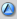

Feature
Description

Time-lapse View displays an interactive graphical representation of a file's history, showing when lines were added, changed, and deleted, who made the changes, and when the changes were made. Time-lapse View enables you to browse forward and back through changes dynamically, to locate changes of interest.
To display Time-lapse View, right-click the file of interest and choose Team>Time-lapse View. To move through revisions, use the slider. Time-lapse View is syntax-sensitive (C/C++, Java, and Ruby), enabling you to navigate file content using an outline view. To hide information that is not of interest, for example, to display only the changes to a single method, fold information using the +/- expander buttons.
To control the display, use the following settings and features, which are displayed in the toolbar.
Feature |
Description |
| Scale | Specifies the unit used to display revisions: changelist number, date, or Perforce file revision number. |
| Go to next or previous revision. | |
|
Toggles display of integration history, to include content that was contributed by branch and merge operations as well as edits. |
|  | Toggles display of information from the changelist in which the currently-selected revision was submitted. |
| Toggles the display of action badges under the slider. The badges indicate the action (add, edit, or delete, for example) that was performed on the file in the corresponding changelist (or date or file revision, depending on the scale you select for the slider). | |
| Displays color coding to indicate how recently a change was entered. The darker the shading, the more recent the change. | |
| Specifies how line endings and whitespace are treated to determine differences | |
| Toggles display of the user that made the change. | |
| Toggles the display of the range of revisions that include each line. | |
| Enable/disable folding, which enables you to show or hide chunks of text | |
| For each chunk, display decorations under the slider indicating the status of the chunk in the corresponding revision. | |
| Reduce the increments under the slider by displaying only revisions that affect the currently-selected chunk. | |
| Link/unlink the selection in the outline view to the slider. When linked, the focus remains on the selected chunk when you use the slider to browse revisions. |